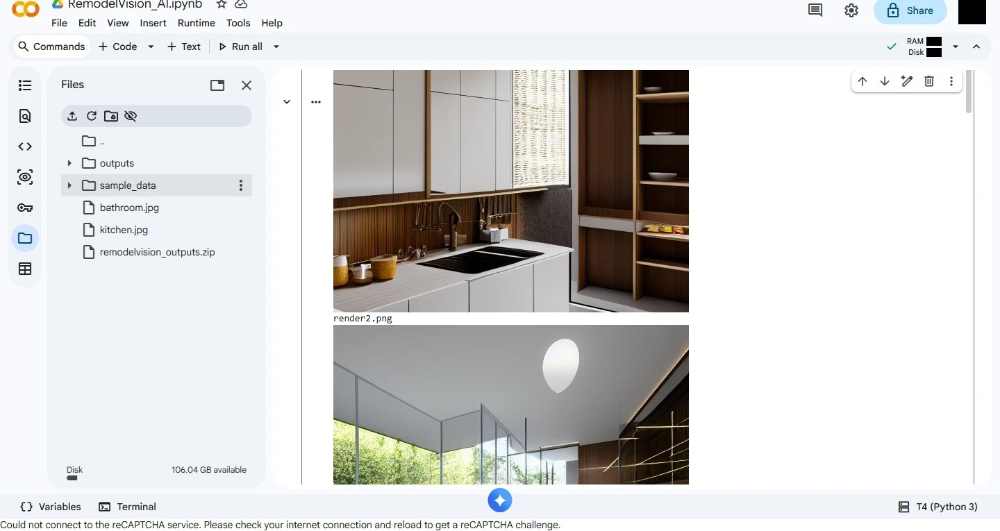
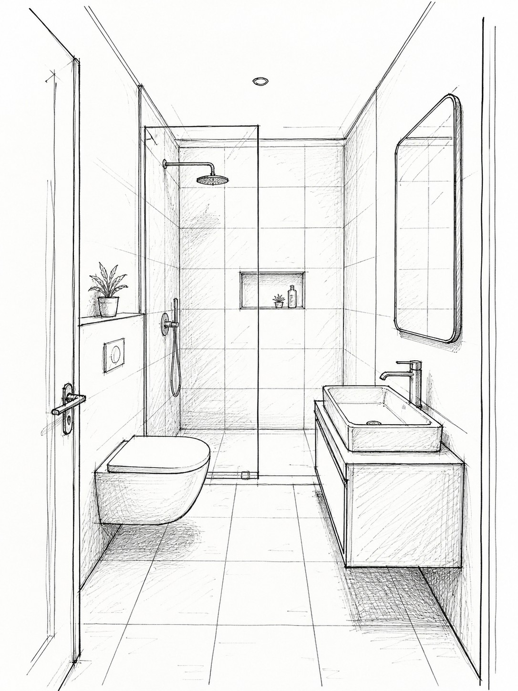

Sketch
Start with a hand-drawn perspective sketch of a kitchen or bathroom.
TEAM 12 · SRM UNIVERSITY AP · DEPT OF CSE
Sketch-to-Photoreal Kitchen & Bath Renderer
Turn consultation sketches into a vision homeowners can see. Sketch-guided AI explores the finished space—before renovation begins.
IMAGE-TO-IMAGE TRANSLATION / HOME RENOVATION

THE IDEA
Contractors sketch kitchen and bathroom remodel layouts during consultations. But lines on paper can be difficult for homeowners to imagine as a finished room.
RemodelVision AI translates perspective sketches into photorealistic visualizations: ControlNet guides structure while Stable Diffusion imagines materials, lighting and detail. A visualization aid—not a construction plan.
01 / UNDER THE HOOD
Start with a hand-drawn perspective sketch of a kitchen or bathroom.
Convert to grayscale, resize to 512 × 512 and invert to white lines on black.
Use Scribble conditioning to guide layout and structural edges.
Synthesize materials, lighting and details using the prompt and guidance.
Review the generated room as a renovation visualization.
stable-diffusion-v1-5/stable-diffusion-v1-5
lllyasviel/control_v11p_sd15_scribble
02 / GENERATOR · INTERACTIVE INPUT STAGE
This local browser demo converts an image to grayscale, resizes it to 512 × 512 and inverts it. Use dark lines on a light background. Preprocessing only—no AI generation in the browser. This does not run Canny edge detection.

Choose an image to start. Images stay on this device; nothing is uploaded.
THE GENERATION DEMO
The models need a GPU; this static site is the project frontend. Free Colab T4 access is subject to availability. The team's notebook is not included in this repository; request it from Team 12.
03 / INPUT & RESULTS
Only team-supplied imagery is shown.
No stock or fabricated AI renders are used.
TEAM-REPORTED TIMINGS · SUCCESSFUL COLAB T4 RUN · NOT INDEPENDENT BENCHMARKS
04 / EXPERIMENTS
Control strength balances creative freedom and structural guidance. The team explored 0.5, 0.8 and 1.0. These descriptions explain the intended trade-off, not a quantitative quality score.
Lower guidance allows more creativity and may drift from the sketch.
Intermediate guidance balances exploration with structural conditioning.
Stronger guidance emphasizes strict sketch adherence, without guaranteeing exact geometry.
05 / HONEST BY DESIGN
WHAT COMES NEXT
06 / PEOPLE BEHIND THE PIPELINE
SRM University AP · Department of Computer Science and Engineering
Input / sketch preprocessing
Generation pipeline
Experiments / ablation / demo UI / evaluation